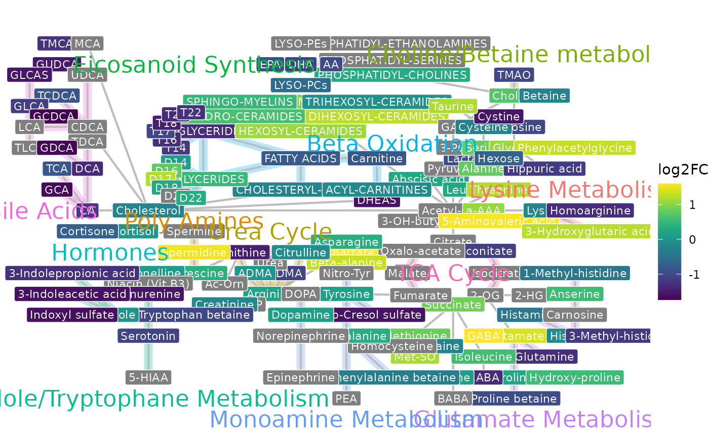

This function plots the log2 fold change for each metabolite and visualizes it, in a pathway network.
Usage
plot_network(
log2fc_df,
q_value = 0.05,
metabolite_col_name = "Metabolite",
values_col_name = "log2FC",
stat_col_name = "qval",
metabolite_text_size = 3,
connection_width = 0.75,
pathway_text_size = 6,
pathway_width = 3,
exclude_pathways = NULL,
color_scale = "Viridis",
gradient_colors = NULL,
save_as = NULL,
folder_name = format(Sys.Date(), "%Y-%m-%d"),
folder_path = NULL,
file_name = "network",
format = "pdf",
width = 29.7,
height = 21,
units = "cm",
overwrite = FALSE
)Arguments
- log2fc_df
A dataframe with log2FC, qval, additional columns
- q_value
The q-value threshold for significance
- metabolite_col_name
Columnname that holds the Metabolites
- values_col_name
Column name of a column that holds numeric values, to be plotted Default = "log2FC"
- stat_col_name
Columnname that holds numeric stat values that are used for significance Default = "qval"
- metabolite_text_size
The text size of metabolite labels
- connection_width
The line width of connections between metabolites
- pathway_text_size
The text size of pathway annotations
- pathway_width
The line width of pathway-specific connection coloring
- exclude_pathways
Pathway names that are exluded from plotting
- color_scale
A string specifying the color scale to use. Options include `"Viridis"`, `"Plasma"`, `"Magma"`, `"Inferno"`, `"Cividis"`, `"Rocket"`, `"Mako"`, and `"Turbo"`, which use the `viridis` color scales. If `"gradient"` is selected, a custom gradient is applied based on `gradient_colors`.
- gradient_colors
A vector of length 2 or 3 specifying the colors for a custom gradient. If two colors are provided (`c(low, high)`), `scale_fill_gradient()` is used. If three colors are provided (`c(low, mid, high)`), `scale_fill_gradient2()` is used. If `NULL` or incorrectly specified, the viridis color scale is applied.
- save_as
Optional: Select the file type of output plots. Options are svg, pdf, png or NULL. Default = "NULL"
- folder_name
Name of the folder where the plot will be saved. Special characters will be removed automatically. Default = date
- folder_path
Optional: User-defined path where the folder should be created. If not provided, results will be saved in `MetAlyzer_results` within the working directory. Default = NULL
- file_name
Name of the output file (without extension). Default = "network"
- format
File format for saving the plot (e.g., "png", "pdf", "svg"). Default = "pdf"
- width
Width of the saved plot in specified units. Default = 29.7
- height
Height of the saved plot in specified units. Default = 21.0
- units
Units for width and height (e.g., "in", "cm", "mm"). Default = "cm"
- overwrite
Logical: If `TRUE`, overwrite existing files without asking. If `FALSE`, prompt user before overwriting. Default = FALSE
Examples
log2fc_df <- readRDS(MetAlyzer::toy_diffres())
network <- MetAlyzer::plot_network(log2fc_df, q_value = 0.05)
#> Warning: Removing 4 invalid nodes.
network$Plot

network$Table
#> # A tibble: 144 × 13
#> Label collapsed_count Pathway Metabolites x y Shape Class pval
#> <chr> <int> <chr> <chr> <chr> <chr> <chr> <chr> <chr>
#> 1 1-Methyl-h… 1 Glutam… 1-Met-His 180 70 o Amin… 0.00…
#> 2 2-HG 1 NA NA 165 59.4 o NA NA
#> 3 2-OG 1 TCA Cy… NA 150.6 59.4 o NA NA
#> 4 3-Hydroxyg… 1 Lysine… OH-GlutAcid 185 90 o Carb… 3.38…
#> 5 3-Indoleac… 1 Indole… 3-IAA 15 60 o Indo… 3.81…
#> 6 3-Indolepr… 1 Indole… 3-IPA 15 70 o Indo… 7.09…
#> 7 3-Methyl-h… 1 Glutam… 3-Met-His 195 40 o Amin… 8.86…
#> 8 3-OH-butyr… 1 NA NA 130 95 o NA NA
#> 9 3-PG 1 NA NA 140 130 o NA NA
#> 10 5-Aminoval… 1 NA 5-AVA 155 95 o Amin… 8.82…
#> # ℹ 134 more rows
#> # ℹ 4 more variables: node_log2FC <chr>, node_qval <chr>, values <chr>,
#> # stat <chr>